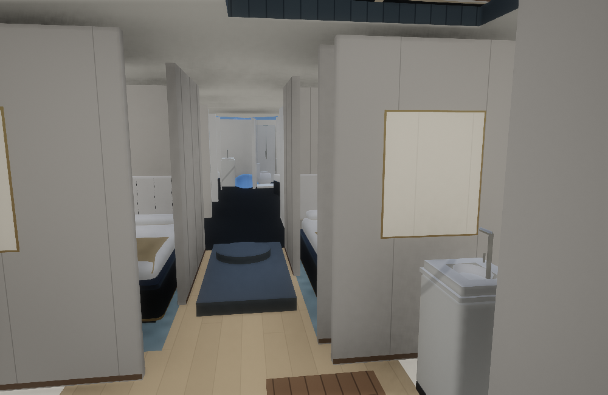
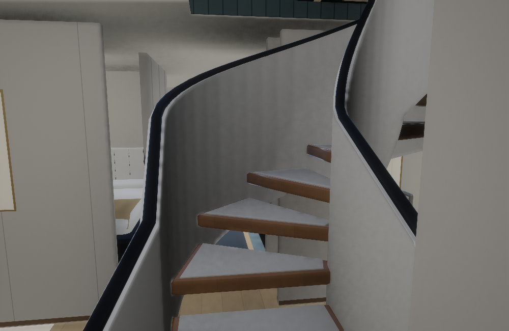
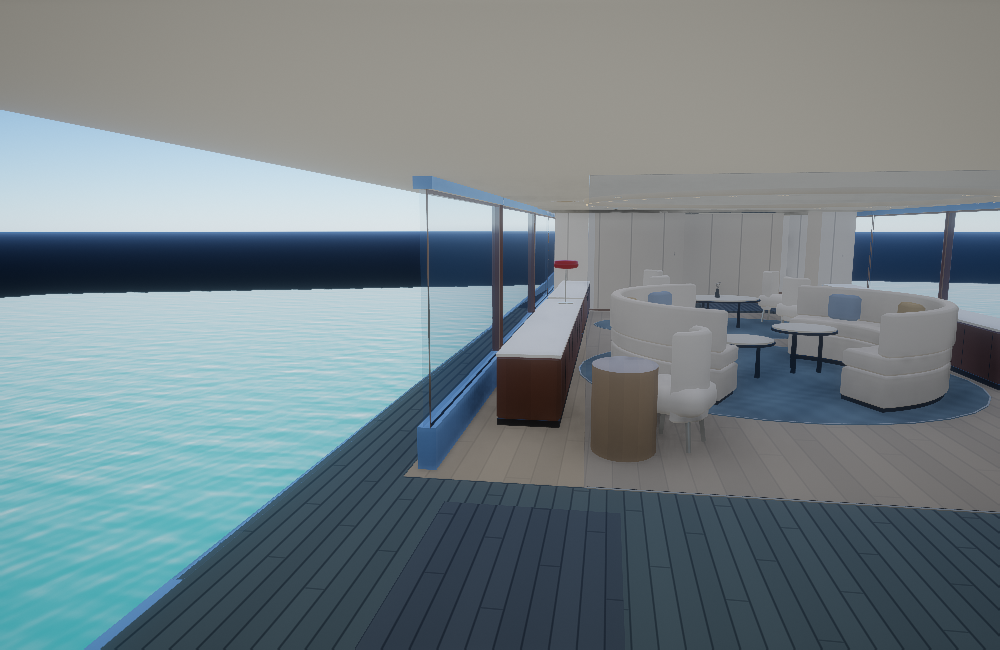
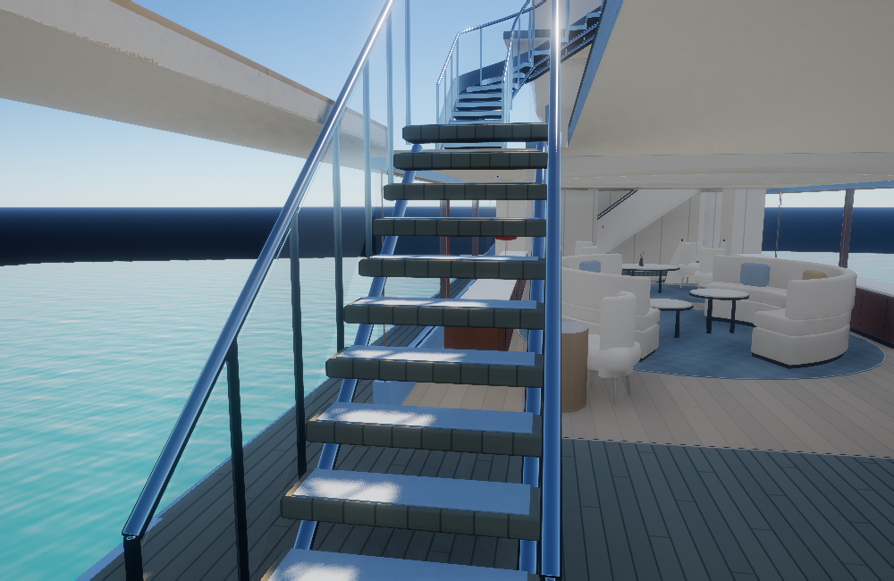
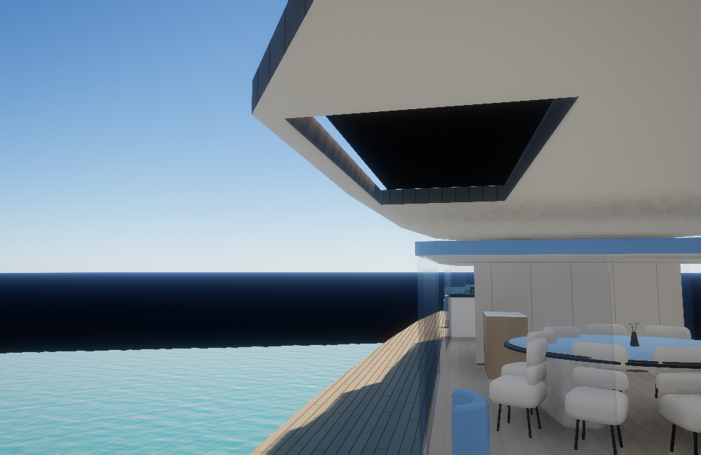
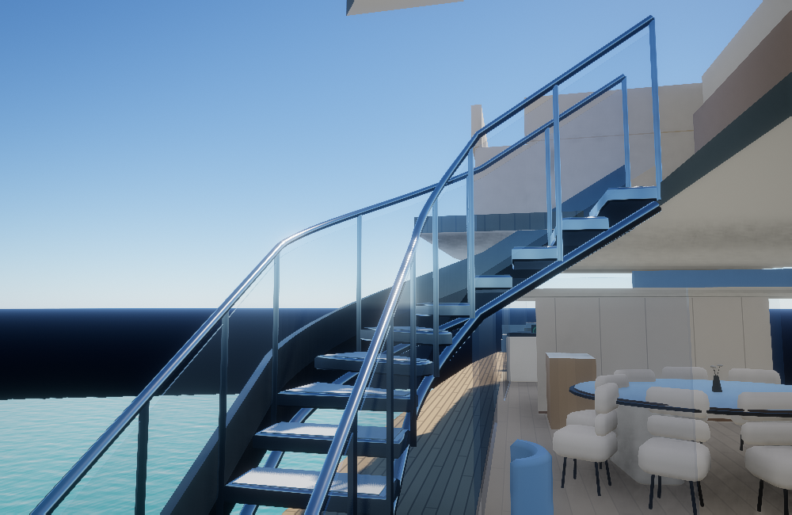
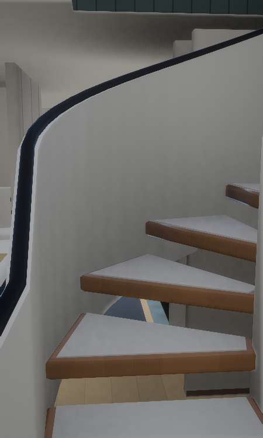
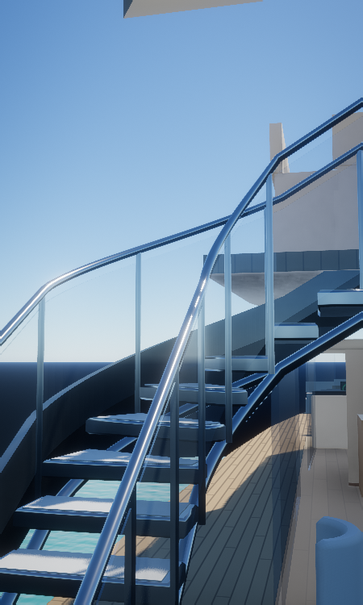

Open the yacht walkthrough →Luz de Mar · Connected decks
Walk from the guest deck to the main deck, bridge, terraces and sun deck. Interior flights have warm timber nosings, pale insets, sculpted ivory enclosures and dark handrails. Open exterior flights use polished fittings and clear guards.
Photo-guided adaptations of Azimut’s earlier Grande 36M interior to the supplied R03 layout. Local stair dimensions are estimates; exact Luz de Mar component drawings were unavailable. Model basis and references.
Guest staircase

Before
AfterAft terrace staircase

Before
AfterSun-deck staircase

Before
AfterGuest staircase · portrait

Portrait viewSun-deck staircase · portrait

Portrait viewThese are actual isolated native Vulkan renders using the yacht materials, sunlight and GTAO/TAA/ACES chain. They are not full Rocha browser screenshots or phone FPS results.